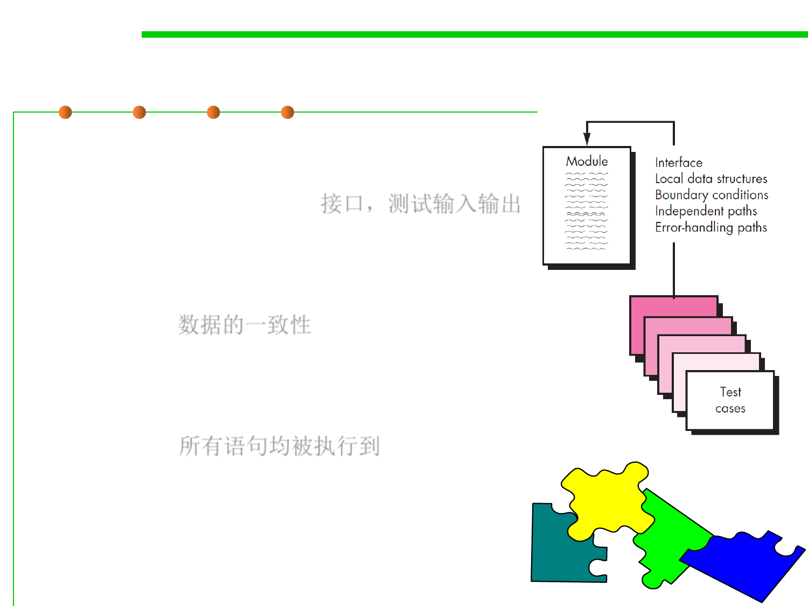

Unit-test considerations
7.5 Testing and Test-First Programming
▪ The module interface is tested to ensure that
information properly flows into and out of the
program unit under test. 接口，测试输入输出
▪ Local data structures are examined to ensure
that data stored temporarily maintains its
integrity during all steps in an algorithm’s
execution. 数据的一致性
▪ All independent paths through the control
structure are exercised to ensure that all
statements in a module have been executed at
least once. 所有语句均被执行到
▪ Boundary conditions are tested to ensure that
the module operates properly at boundaries
Unit-test
established to limit or restrict processing.
Unit-test
Unit-test
▪ Finally, all error-handling paths are tested.
Unit-test